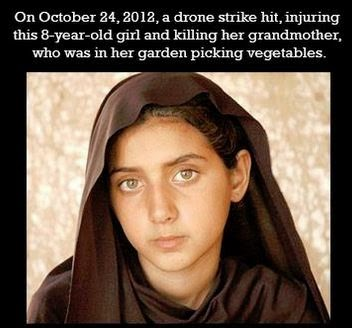

We have reached a point in our nation's descent
into psychotic tribalist fear where people of stature and apparent sobriety
unabashedly use the expression “final solution” when discussing the existence
of Muslims.
For ISIS “and those similarly motivated,” insists
retired Marine Lt. Col. James G. Zumwalt in an essay published by Family
Security Matters, “a rational world should recognize but one `final
solution' exists – their extinction.”
For Zumwalt. “those similarly motivated” is an expansive
category, which includes not only “al-Qaeda, Hamas, Hezbollah, the Taliban, the
mullahs of Iran, Somalia's Shababb, [and the] Khorasan group,” but also their
Muslim victims. On the basis of murkily sourced atrocity accounts and
propaganda videos of dubious provenance, Zumwalt concludes that the victims of
ISIS exhibit a “Muslim death wish” by supposedly allowing themselves to be
killed without seeking “to overpower their captors.”
“The message to take from Muslim victims unwilling to save
themselves to pursue their promised afterlife should be clear: their murderers
will never be convinced to stop killing,” asserts Zumwalt. An unspoken but
undeniable corollary of his view is that wholesale annihilation of Muslim populations
is strategically necessary and morally justifiable, because Muslim victims of
terrorism are infected with the same “ideology” as their captors.
Zumwalt is a prominent mouthpiece for the Military-Industrial
Complex, and it's not surprising that his views are echoed by other members of
the Pentagon-aligned Commentariat. For example, Retired Army Lt. Col. Tony Shaffer
claims
that Syrians under siege by ISIS have pleaded, “Please bomb us! We'd rather be
bombed and dead, than raped by ISIS.”
For Zumwalt, the only good Muslim is one who has been
violently dispatched to his anticipated paradise. Shaffer refines that message
by suggesting that good Muslims display their virtue by begging for the US
government to kill them.

“Kill them all, for God will know his own,” recommended the
religious adviser to the
pious Crusaders laying siege to the castle at Beziers, setting their minds
at ease over the prospect of killing orthodox Catholics along with Albigensian
heretics. That mandate, adapted to a literary level suitable for “reality”
television, was
recently renewed by Duck Dynasty patriarch (and, therefore, theological
heavyweight) Phil Robertson with application to Muslims: “In this case, you
either have to convert them – which I think would be next to impossible … or
kill them.”
Yes, Robertson was referring specifically to the
much-dreaded and nearly omnipotent ISIS, but his core audience consists of
people who have been convinced that all Muslims are, at best, latent Jihadists
who seethe with unconsummated and irrepressible lust to slit the throats of all
infidels.
ISIS “is doing to America [sic] journalists what every true
follower of Mohammed wants to do to you and yours: subjugate or murder you,” shrills
Gary Cass, who apparently regards himself as a pastor of some variety.
“They believe they have been given a mandate by Allah [Satan] to dominate the
world.”
Cass, who maintains a website called DefendChristians.org,
apparently isn't aware that Allah (a cognate for
Elohim) is an ancient Name-title of the Deity used by millions of Arab
Christians who neither worship Satan, nor seek the triumph of a global
Caliphate. He is also tone-deaf to the implications of the three “solutions” he
proposes for the Muslim world.
The first “solution” is mass conversion, which he dismisses
as a genetic impossibility, given their descent from Abraham by way
of his supposedly cursed son Ishmael.
“God has a plan, and he revealed it at the birth of Ishmael,
the father of the Arabs,” Cass pontificates. “The Arab Muslims are God's sworn
enemies and are ordained by God to be against everyone.”
Terrible, having bad blood like that. This leads to Cass's
second “solution” – “Depart All Muslims Now” (which he puckishly reduces to the
acronym DAMN), which means either mass sterilization, mass expulsion, or some
combination of the two.
| Peddling mass murder: Cass at the pulpit. |

“Muslims in America are procreating at twice the rate of
other groups,” writes Cass. Displaying either culpable ignorance of the
historical resonance of his suggestion, or depraved delight therein, Cass said
that our options are either to “force them all to get sterilized, or we wait
for the `Army of Islam' to arise in our midst and do what Muslims always do,
resort to violence.”
It has been said that contemporary tyrants read Orwell as an
instruction manual. Cass makes similar use of Exodus
1:8-10, which describes how Pharaoh, alarmed over Hebrew fecundity, employed
quasi-genocidal means to reduce their numbers for the purpose of strategic
pre-emption.
Neither forced conversion, government-inflicted barrenness,
nor mass expulsion offers an appropriate remedy, according to Cass, which
leaves us with his final “solution”: “Violence.”
Since “every mosque in America is conspiring to kill you and
yours,” Cass maintains, “we must be prepared for the increase of terror at home
and abroad.... Muslims cannot live in a society based on Christian ideals of
equality and liberty. They will always seek to harm us. Now the only question
is how many more dead bodies have to pile up at home and abroad before we crush
the vicious seed of Ishmael in Jesus' name?”
Genocidal warfare – a systematic campaign to eradicate all
Arabs – is a severe form of mercy, Cass assures his readers, admonishing them
to “take the lesser pains now so our children won't have to take greater pains
later.”
That's right: He wants us to annihilate the “seed of
Ishmael” (which, by his definition, would include Arab Christians, as well as
non-Arab Muslims) for the children.
 |
| Children like this young girl, presumably ... |

Paul Hollrah, a Senior Fellow with a dodgy organization
called the Lincoln Heritage Institute, agrees that we confront a monolithic
Muslim menace. His approach is a shade more subtle than Cass's – it would have
to be, given that Cass's manifesto is practically an abdridged transliteration
of Mein Kampf – but just as comprehensive. Hollrah urges legislative action to
criminalize the religion of Islam, coupled with the use of holographic propaganda
to re-program Muslims imprisoned in concentration camps.
“Islam is not a religion, as we understand the term,” Hollrah
pronounces with the unwarranted but invincible certitude of a confirmed bigot.
Instead, he continues, it is a subversive movement devoted to the overthrow of
the US government “by violence, if necessary.”
“Accordingly, we must resolve that `What is sauce for the
(Communist) goose is sauce for the (Islamic) gander,” he continues, calling for
the transposition of the Communist
Control Act of 1954 into a measure targeting Muslims. His proposed
legislation would define Islam as “the agency of a hostile foreign power”
constituting “a clear and present danger to the security of the United States,”
and designate its followers as people “directed and controlled in the
conspiratorial performance of their revolutionary services. Therefore, the
organization of Islam shall be outlawed in the United States.”
After enacting this measure, and ensuring that “eyes and
ears are planted in every mosque and Muslim center in the United States,” American
Muslims could be cattle-penned with “jihadists and other soldiers of the faith”
who are “warehoused in various CIA black sites, as well as prison compounds in
Afghanistan and Guantanamo Bay.”

Since the typical jihadist (like all other Muslims,
presumably) has “the intellectual capacity of an angry chimpanzee,” it would be
possible to reprogram him through the use of a holographic simulacrum of the
Prophet Mohammed. This apparition, which would float “in mid-air … some fifteen
or twenty feet above the floor” like the computer-generated idol
Landru from Star Trek, would tell captive Muslims that terrorism is a sin,
and that terrorists who kill the innocent will suffer “eternal hellfire.”
Such “drastic measures” are justified, Hollrah maintains,
because “we are dealing with religious fanatics whose only goal in life is to
kill us all, and for no other reason than that we exist.”
That characterization may be true of an immeasurably small
fraction of Muslims, who reside within a larger number of Muslims whose anger
toward the West often grows out of entirely legitimate grievances with U.S.
foreign policy. It is also the case that an increasing number of Americans
believe that “infidels” cannot be secure as long as Muslims exist. This
implacable enemy, we are told, includes followers of Islam who have
distinguished themselves by preaching peace, reconciliation, and civic
responsibility; all of this, we are told, is mere “taqiyya” – strategic deception
by people conducting an insidious “stealth jihad” in the service of the incipient
“global caliphate.”
“Mohammed’s teaching only teaches one thing,” Oklahoma State
Representative John Bennett declared during a town hall meeting in
Muskogee. “And that’s the violence that we’re seeing today in ISIS and the
beheading in Moore and other places.”

Bennett was referring to the horrific murder
allegedly committed by Alton Nolen at Vaughn Foods. Hours after being
terminated from his job, Nolen returned to the business brandishing a knife,
with which he attacked two women. One of them was stabbed with such ferocity
that her head was severed. The other survived the assault, which was ended by a
co-worker who shot the assailant.
Nolen, who served prison time for a violent felony, was
described as a recent convert to Islam who tried to proselytize his co-workers.
His murderous anger, however, was triggered by job-related frustrations, not an
expression of a perverted missionary impulse. The lethal knife attack was no
more a ritual execution of an infidel than the similarly
gruesome stabbing of Nicole Brown Simpson twenty years ago – another assault
that nearly
severed the victim’s head from her body.
Like other
similarly ill-informed and irresponsible people, however, Bennett insists
that the murder at Vaughn Foods was an act of mini-jihad inspired by the
teachings Nolen had absorbed at the Islamic Society of Greater Oklahoma City,
which the Republical legislator pretends is a roiling cauldron of radicalism.
Weeks before the murder in Moore, Bennett – whose “expertise”
regarding Muslim violence is a product of his experience as a Marine sent to
kill them in Iraq and Afghanistan -- described
Islam as a “cancer in our nation that has to be cut out.”
In a post on his
Facebook page, Bennett claimed that “The Quran clearly states that non-Muslims
should be killed” and urged Oklahomans to be “wary of the individuals who claim
to be `Muslim American.’ Be especially wary if you’re a Christian.”
Confronted about his casual defamation of at least 40,000
Muslim residents of Oklahoma,
Bennett replied that ISIS cadres are invoking the
Quran while committing “beheadings in Iraq and Syria and if they aren’t
stopped, the same will happen here.”
“Muslim Americans who subscribe to Islam are just as bad as
ISIS,” Bennett pronounced in a television interview, dispelling any ambiguity.
With respect to condemning ISIS, Bennett was pushing against
an open door: Both the Oklahoma chapter of the Council on American-Islamic
Relations (CAIR) and the Islamic Society of Greater Oklahoma City (ISGOC)
had emphatically, explicitly, publicly, and repeatedly denounced the group.
This merely ricocheted off Bennett’s impervious bigotry: The representative dismissed
those gestures as “lies and deflections” intended to conceal the supposed
fact that all Muslims in Oklahoma are a jihadist Fifth Column.
It would be irresponsible to ignore the fact that there were
threats of beheadings issued in the weeks leading up to the murder at Vaughn
Foods. To be specific, those
threats were made against peaceful Muslims who were preparing for an anti-ISIS
demonstration. Adam Soltani, spokesman for CAIR Oklahoma, described
receiving an anonymous phone call telling him that “all Muslims should be
beheaded.”

“We started getting threats and hate messages a few weeks
before the murder,” Imam Imad
Enchassi of the ISGOC told me in a telephone interview. “This happened
after Bennett claimed that ninety percent of
the Quran is violent, and that Americans should be
afraid of Muslims and that Islam is a `cancer’ in our country that `needs to be
cut out.’”
“This wasn’t just political rhetoric,” the Imam maintains.
“This was meant to dehumanize us and depict us as a threat that had to be
removed, by force if necessary, from our country. We reached out to the GOP
leadership, and we got no response, although we did get support from many of
our neighbors and partners in the interfaith movement. Things calmed down for a
while– and then ISIS started beheading people, and the hate messages started to
trickle in again.”
Imam Enchassi points out that “There are tens of thousands
of Muslims living in Oklahoma, and we have categorically condemned all
terrorism, including the crimes committed by ISIS. Those acts are intolerable,
not only as offenses against our faith, but as crimes against all standards of
decency and rules of civilized living.”
The anti-ISIS demonstrations in OKC were not hastily
arranged PR exercises, Enchassi emphasizes, but entirely consistent with his
teachings and the practices of the mosque he leads.
“I’ve been condemning terrorism for more than twenty years,”
points out Enchassi. “My sermons
are all publicly available. There’s nothing hidden; there’s no double-talk
involved. I’ve taught how to recognize someone who is planning to commit acts
of terrorism, and about our religious duty to cooperate with authorities in
identifying and, where necessary, prosecuting people involved in such crimes.”
This long and public history of peace-making and outreach
did nothing to inoculate Dr. Enchassi and his fellow congregants against the
viral outbreak of fear and hatred that was so diligently nurtured by Bennett
and his comrades.
According to Megan Kelly, Fox News’s pneumatic herd-poisoner, the
atrocity at Vaughan Foods was “the first beheading on American soil by someone
who apparently self-radicalized” at the mosque where Dr. Enchassi teaches.
“In public, the mosque Noel worshipped at has denounced his
alleged actions,” Kelly continued, her voice theatrically heavy with
insinuation. She introduced an anonymous figure called “Noor,” who was shrouded
in shadow to “protect his identity.”
“To the public, the mosque will not promote terrorism or any
kind of radical acts,” drawled “Noor.” “But when they’re among friends and
congregants only, they will promote the true teachings of Islam, which include
the offer to non-Muslims – the choice, rather, that they must either convert,
live under Islamic rule, or be fought against.”
“Noor” recited the familiar catechism of professional
mosque-baiters – accusing the local Muslims of practicing “taqiyya ” and “stealth
jihad,” and discussing beheading as an appropriate remedy for refractory non-belief in Islam.
“The last time I was in the mosque as 2011 … at the request
of law enforcement,” the anonymous accuser told Kelly, who claimed that Dr.
Enchassi and his colleagues routinely preached sympathy for terrorism and
subtle messages of violent subversion.
“I know who `Noor’ is, and from what I’ve observed he is a
troubled man,” Enchassi told me. “He attended our mosque for a while, then
joined a local white supremacist group before winding up at with a Christian
congregation that spends a lot of time bashing Muslims.”
There is no evidence whatsoever that Nolen’s violent eruption
was inspired by teachings he absorbed at Enchassi’s mosque. There is, however,
reason to believe that hate-saturated anti-Muslim agitation inspired an
incident last January in which Tulsa resident Stuart Manning assaulted a woman
wearing a headscarf, threatened her with a knife, and slashed her tires.
Stuart, who claims he was drunk at the time, execrated the woman as a “f***ing
Muslim bitch.” The victim, in fact, was
a Christian refugee from Lebanon – although this distinction shouldn’t
matter for those devoted to exterminating the “seed of Ishmael.”

In some ways, “Noor” is the photographic negative of Alton
Nolen, Enchassi suggests.
“Nolen made it clear that he doesn’t like white people,” the
imam related to me. “And this fellow being called Noor has similar problems
with non-whites. If you examine the material from Nolen’s Facebook page, it’s
clear that he was not a conventional Muslim. Some of what he said and wrote is
quite a bit like the beliefs of the Black Hebrew Israelites, and some of it
seems to be adapted from Satanist literature as well. He certainly wasn’t in
any way representative of our congregation. It’s hard to say that he was
representative of anyone, other than people inclined toward criminal violence.”
A representative sample of Dr. Enchassi’s teachings can be
found in
his pre-Christmas sermon from 2010 – for which “Noor” may have been in
attendance, either on his own, or as an informant. The theme of that homily was
the respect that Muslims should have for Jesus – who is revered by them as a prophet
– and for Jews and Christians as “People of the Book – people who were worthy
to receive the Book before us.”
“A long time ago, brothers and sisters in Islam, Allah sent
the prophets, one after another, with the same message” of peace, reconciliation,
respect, and love, explained Dr. Enchassi. Rather than exhorting his audience to
pursue domination, the imam described how Muslims once embarked on what they
believed to be a divinely appointed migration to Ethiopia in order to live
under a Christian king who would “uphold justice”

“There are some parts of the world [where] Muslims and
Christians don’t get along – not because they’re Muslims, and not because
they’re Christians, but because … there is injustice being done,” observed Imam
Enchassi. “Sometimes that injustice is being done by Muslims. Sometimes that
injustice is being done by the Christians. Sometimes that injustice is being
done by the Jews. That does not make Muslims and Christians ultimate enemies.
Neither does it make Muslims and Jews ultimate enemies… As Muslims we are
ordered by Allah to stand up for justice. It doesn’t matter who’s the person
who is being unjust. We are to stand up to those who are being unjust. Even if
they are Muslims? Even if they are Muslims.”
At the time, the
Oklahoma State Legislature, under the influence of intemperate and bigoted
people like John Bennett, was considering a measure intended to “protect” the
state against the non-existent threat of “sharia law.” That measure would
be a down-payment toward the eventual criminalization of Islam altogether. In
addressing this development, Dr. Enchassi urged his audience to emulate the example of
Jesus.

“Look at us in
Oklahoma City, brothers and sisters in Islam,” declared Enchassi. “There are
those who are legislating laws against Islam and Muslims. We will stand firm –
but that does not mean that everybody in Oklahoma City is with those people.” He
expressed appreciation for local Christians, Jews, and others of no faith other
than that in human decency who had spoken in defense of the Muslim population: “Those
are people who understood what justice is.”
In the teeth of officially sanctioned persecution, Enchassi
continued, it was a Muslim’s duty to display “love and compassion …to the
followers of the prophet Jesus – peace be upon him.”
“At a time when Islam is being attacked … we have a
principle – don’t attack back,” he concluded, paraphrasing an admonition from
the Sermon on the Mount.
This is indeed an alien doctrine to “Christians” of the sort
who claim a divine mandate to “crush the Seed of Ishmael” in pursuit of a “Final
Solution” to the Muslim Question.
(One of the photographs above was mis-identified in the original version of this essay. I regret that error, and appreciate the correction.)
(One of the photographs above was mis-identified in the original version of this essay. I regret that error, and appreciate the correction.)
Dum spiro, pugno!
27 comments:
Great post about a crazy situation, William. Very informative and well put together.
Of course it is never really about the one religious group against another but actually the psychopaths in every religion and government against the rest of us.
Wow, made me think, again. Thank You, what a timely post.
Our flag means a great deal to me. It stands for the best of America. America is tough and strong, but fair. We have been a force for good in the world, have we at times faltered, of course. Lets hope we once again find those strengths.
As a native of Oklahoma, now resident of Madison, Wisconsin, I'm saddened by the bigotry proudly displayed by politicians and ordinary citizens. There has been an Arab presence in the Sooner State for a hundred years or more, and it was valued for tolerance, its energy, and its contributions to civic progress. Hundreds of Muslim youth from the oil states such as Arabia and Iraq went there to study at the three major universities, two of which are world leaders in petroleum engineering. They were welcomed by a tolerant citizenry steeped in the communitarian ideals of the recent New Deal and of the more recent global struggle against fascism. It is a shame that hate-mongering preachers, political hacks, and ignoramuses generally now are the public face of Oklahoma.
it is a sad day when so many ignorant, demented, and bigoted mindsets are so close to be higher levels of leadership in the United States.This very article highlights the aforementioned mindsets.
These people are not only dangerous to law abiding, tax paying, voting Muslim Americans, but ALL US citizens of good consciousness.
I have news for this genius. The seed of Ishmael is blessed according to Bible, "And as for Ishmael, I have heard you: I will surely BLESS him; I will make him FRUITFUL and will GREATLY increase his numbers. He will be the father of twelve rulers, and I will make him into a GREAT nation."Genesis 17:20
Secondly, most Muslims are not even from Ishmael (80% of Muslims are not Arabs).
First, take the extreme view of some so-called Christians and the minority view of some peaceful Muslims to portray Muslims as true Christians and Christians as Nazis scheming to take over America. Well done!
Do you believe Islam is not a danger to Christians or Christianity? Think again.
You call yourself a Christian. Why would you defend the largest Anti-Christian faith in the world with this article? Maybe because you have "no faith other than that in human decency". Pity, Christ did not preach decency.
All I see in you is a black man with a chip on his shoulder. You screwed up on the Travon Martin hoax and you're screwing up here in regard to Christianity and the defense of America. You need to put your talents to better use.
an ally of zumwalt (small letter intended)et al:
http://mondoweiss.net/2014/10/genocidal-atlanta-hashanah
Do you believe Islam is not a danger to Christians or Christianity?
Gary Cass, who has a large audience and exercises considerable influence, describes Islam as "the existential threat to the Christian church." I find myself wondering if his copy of the New Testament contains Matthew 16:18. As a man who has faith in something and Someone much more powerful than "decency," I understand that neither Islam nor anything else has the power to nullify God's promise that the church (the body of believers) will never be destroyed.
All I see in you is a black man with a chip on his shoulder.
I am constrained to admit that your analysis of my views is every bit as accurate as your perception of my ethnic background.
Thank you for posting this article; it is quite an eye-opener.
Christian ideals and principles come from Jesus Christ Himself, who proclaimed them in His 8 Beatitudes which, btw, extoll peace and love. However, these "crusading" politicians and false pastors in Oklahoma are mouthing the New Testament's polar opposite, the Talmud, a book of the Scribes and Pharisees in Jesus' time. The Talmud is the book that calls for the extermination of Gentiles (non-Jews); and these religious bigots falsely apply the Talmud's texts to those of the Koran.
Jesus and His mother, the Blessed Virgin Mary, are held in very high esteem in Islam, but the opposite in the Talmud. The vast numbers of Christians slaughtered in the 20th Century weren't slaughtered by Muslims; they were slaughtered by atheistic, Bolshevik Talmudists.
ISIS = Israeli Secret Intelligence Services
Do you believe Islam is not a danger to Christians or Christianity?
Why would the only religion that explicitly commands its followers to protect the lives, property and liberty of Christians be a threat to Christians or Christianity? Perhaps you're not aware of the Treaty of Medina, or the Treaty of Jerusalem, or the convivencia, an epoch in European history from which the seeds of the Renaissance were sown? You can discover more about the latter of these here: https://archive.org/details/CitiesOfLightTheRiseAndFallOfIslamicSpain1of2
Or perhaps you're not aware that we muslims regard churches as inviolable:
For had it not been for ALLAH's repelling some men by means of others, cloisters and churches and oratories and mosques, wherein the name of ALLAH is oft mentioned, would assuredly have been pulled down. Qur'an 22:40
So how is Islam, which unequivocally orders muslims to defend Christians against aggression threatening the safety and security of their community, a threat to you, Mr. Anonymous?
You call yourself a Christian.
He certainly understands Jesus far more than most Christians do.
Why would you defend the largest Anti-Christian faith in the world with this article?
Why do you consider Islam to be anti-Christian? We love Jesus and his mother and don't level against them the calumny and slander they endured from the leadership of Temple Israel, to whom Jesus directed his harshest words, such as "whited sepulchres of dead men bones" and "brood of vipers." Jesus himself describes the anti-Christians in Scripture. Being the devoted Christian you are, you'll surely be able to locate these references and discern who they are for yourself.
Pity, Christ did not preach decency.
So "Love thy neighbor ..." and "Do unto others ..." and all those beautiful beatitudes do not arouse in you a desire to treat your fellow man with decency?
Jesus most certainly brought decency, humility and compassion, to name but a few of the illustrious attributes with which he was graced. It's a pity that some who claim to walk in his footsteps know nothing about them.
All I see in you is a black man with a chip on his shoulder.
That's because you don't see him at all.
You need to put your talents to better use.
His talent as a writer far exceeds that of most I've seen, and I've known quite a few. Perhaps you would do well to heed your own advice, though I have yet to see you demonstrate much in the way of talent.
As a man who has faith in something and Someone much more powerful than "decency," I understand that neither Islam nor anything else has the power to nullify God's promise that the church (the body of believers) will never be destroyed.
I could not help but smile upon reading this, knowing that, at the foundation of your statement, a groundswell of great conviction rises to overwhelm any and all who would deprive you of faith while we who submit (the literal translation of "muslims") will defend to the death your right to hold it as you wish.
I am personally touched by your photographs of Egypt, where I currently reside with my wife. God-willing, we hope to be stateside someday soon. Knowing that Jesus has soldiers such as you will make it all the more welcoming.
Seems to me the incredible finger pointing at the Islamic population by those of other faiths, have 3 fingers pointing back at themselves. I am very suspect of those wicked ones in power who parade themselves as Christians or Jews. I think they might be the real "great satan" in disguises. These wars are all about media misdirection and slealthily crafted plans of power and wealth shifting into the hands of very few who hate humanity and want to cull the herd. I believe Muslims are saveable to Christ. May they all hear and have a chance to accept His offer of salvation. All men are damned who damn Him, no matter where they come from!
Good post, except for the caption of Egyptians "protecting Christian church". I think I remember that photo from 2011. That was Egyptians protecting the national museum with artifacts dating several thousand years.
Good post, except for the caption of Egyptians "protecting Christian church". I think I remember that photo from 2011. That was Egyptians protecting the national museum with artifacts dating several thousand years.
There's an even better one William may wish to use here:
http://www.ilovemuslims.net/2013/08/egypt-muslims-defending-churches-christians-protecting-mosques/mqukpfg/
or here:
http://media.vocativ.com/photos/2013/10/Egyptian-Church-Feature-620x4261960204110.jpg
or here:
http://2.bp.blogspot.com/-ExXcawT7-FI/UhaNBR5rlaI/AAAAAAAADcI/KIVeZNV6LzI/s1600/egy-inside.jpeg
And to provide a perspective of Pakistani muslims:
http://www.huffingtonpost.com/2013/10/08/muslims-form-human-chain-pakistan_n_4057381.html
Funny how these pictures simply don't exist for most Americans. Why is that?
I am very suspect of those wicked ones in power who parade themselves as Christians or Jews.
"By their fruits, you shall know them."
Your inclination is a good start.
I think they might be the real "great satan" in disguise (sic)
Two giants engaged in battle with each other are easily overwhelmed by a third party, however small. Perhaps this comparison will assist you in understanding how the enemies of humanity gain the upper hand by pitting the world's two largest nations of faith against each other.
These wars are all about media misdirection and slealthily crafted plans of power and wealth shifting into the hands of very few who hate humanity and want to cull the herd.
The misdirection isn't new, it's older than most of us imagine and its purpose has always been driven by the desire of these few to maintain advantage over the remainder of humankind. Procuring this advantage begins by controlling the "official" historical narrative, which for both Christians and muslims, begins with Scripture.
It is to our benefit to re-examine this narrative, that therein we may uncover what the enemies have kept concealed for so long.
I believe Muslims are saveable to Christ. May they all hear and have a chance to accept His offer of salvation.
We have heard the Good News brought by Jesus and we live in accordance with it. Now ask yourself why you didn't know this before.
I am a Muslim African American and a student of the Islamic School of Thought established by Imam W. Deen Mohammed and I am a Republican. That disclosure needed to be made. I have said for years that may Allah bless America if she is right or wrong. Some would look at me strangely for making a comment asking Allah to bless America if she is right or wrong. In defense of my statement I would quote Prophet Mohammed (prayers and peace be on him) where he proclaimed "help your brother if he is right or wrong" some of his followers stated we know how to help in the right, how can we help in the wrong? Prophet Mohammed (prayers and peace be on him) responded by holding him back from wrong". This guidance appears to be missing in almost the entire Mideast, I know the chief under minder is unchecked greed and how it is used to exploit and oppress those majority Muslim countries with tyrants.
My citizenship in America is the second greatest blessing I have received the first is my faith in G-d. Once I was having a conversation with my son and some of my employees most of which were Muslim, this was the question I asked, if America was attacked by Saudi Arabia which side would you fight on? Most Muslims did not know my son said Saudi Arabia I said you will be the first person I kill. Today this same son now says I will defend America. In fact this is the position of the Quran. I would certainly like to have a conversation with these people who actually hate America while saying they love our country.
As-salaamu 'alaikum.
In defense of my statement I would quote Prophet Mohammed (prayers and peace be on him) where he proclaimed "help your brother if he is right or wrong" some of his followers stated we know how to help in the right, how can we help in the wrong? Prophet Mohammed (prayers and peace be on him) responded by holding him back from wrong".
I'll get to this ...
This guidance appears to be missing in almost the entire Mideast, I know the chief under minder is unchecked greed and how it is used to exploit and oppress those majority Muslim countries with tyrants.
Our Prophet (Peace, Mercy and Blessings upon him) foretold of "the knowledge being taken up" from among his people and this is precisely what occurred, as prophesied, within less than a century of his passing. The contemporary condition of the millenial Arab muslim world is sufficient evidence of this.
The "unchecked greed" to which you allude is merely symptomatic. It may be argued that internecine strife among muslims in the millenial world ironically arises from application of the very haddith you quote. It's not that the haddith remains unknown, it's a matter of how we apply it.
And this is the knowledge that's been lost there: that of the method.
I'm familiar with Warith Deen's jama'ah. You might be interested to learn that you're not alone among muslim Americans. We've been here for years:
http://www.muslimamerica.net/
As Salaam Alaikum
To Pensword,
We as circumspect thinkers need to refer friends and colleagues to Mr. Grigg's
site and support his advocacy of truth and liberty which are universal. I became
aware of Mr. Grigg listening to Anti-War.Com Radio then hosted by Scott Horton,
who now can be heard @Scott Horton Show.org. The comment "This guidance
appears to be missing in almost the entire Mideast", tastefully alludes to the
fact this practice of The Prophet is virtually with no public or private
advocates in majority Muslim lands in the Mideast, not that it is unknown or
misapplied it simply put, is MIA. This phrase "unchecked greed” address's the
absence of a check or balancer in systems where there are people who cannot in
their country be brought before the court of law such as the king of Saudi
Arabia or the new beast in North Africa, Egypt "President" Sisi. Yet in America, President
Clinton was impeached, and had our Senate voted with enough removal votes he
would have been ejected from office. These tyrants know what's right and how to
do it, G-d says in The Quran "Qarun was doubtless, of the people of Moses; but he
acted insolently towards them:". We just need to accept the truth some people
are intent on wrong doing. Thank you for your observations. I appreciate how you
so succinctly addressed Anonymous.
Looking at you handle "Pensword" it is a double positive, I like the
implication that the word is mightier than physical weapons of war.
wa 'alaikumus-salaam!
arepublicsdefender,
In our world, when a teacher confers "ijaza" upon his student, it differs markedly from a university's granting of degrees. That is because the attainment and guardianship of knowledge demands more than demonstration of academic competence. Knowledge becomes something other than itself without ceaseless application.
Herein lies the difference between Islam in America and its chimeric countenance in the "old world."
But corruption in the institutions of government to which you allude merely indicates a people's abdication of responsibility for holding their leaders' feet to the fire. Clinton's near impeachment provides an indication of how American government could work, but examine the substance of the controversy. It may be that Bush II was a more worthy candidate for impeachment, yet no such proceedings were forthcoming. So what does this tell us about America's knowledge? Read "The New First Amendment" to understand how far removed we are from the promise of religious liberty enshrined in the Constitution:
http://www.muslimamerica.net/mp/newfirst.htm
The drama that surrounds the Throne of Babylon is just stagecraft for the masses, a grandiose distraction designed to occupy our faculties with the illusion of knowledge while the enemies of humanity collude to successfully consolidate power, out of sight, out of mind.
When the shuyukh from the millenial world arrive here, witness Islam as it is being raised in America and declare that "The Stranger has returned," their attention is as far from Babylon as you could possibly imagine.
http://www.muslimamerica.net/mp/stranger.htm
I enjoy our correspondence. It's been some time since I've engaged in anything like this and I welcome the opportunity to learn from my brothers in faith.
Thank you.
was-salaam,
pensword
I enjoy our correspondence. It's been some time since I've engaged in anything like this and I welcome the opportunity to learn from my brothers in faith.
I've enjoyed listening in, as well. Thank you so much for sharing your thoughts with us.
Peace,
Will
Americas real strength was in the strength of its ideal; it was not in the strength of its military. This is not longer the case as America degenerates into barbarism, being led by Christian and Zionist bigots and fanatics who have seized control of government policy and the propaganda apparatus--print and electronic media as well as Hollywoood. And the politicians? They are just the hired help of these lunatics. I don't vote because I refuse to validate and legitimize such people and such as nation as America has become.
Article concentrates on drone àttacks against women and children, no mention of the 100's of thousands of Muslims killed by Muslims in the name of Islam. Look at the other side as well.
It is the photos, not the text, of the article that focus on drone attacks; the substance of the essay is rather a bit more involved.
The central theme of the piece is the overt drive to criminalize Islam and eradicate those who profess that religion. I am opposed to genocidal initiatives, and have no interest in examining the supposed merits of the "other side" in such a discussion.
Many hundreds of thousands of Muslims have been killed in internecine conflicts. Within the memory of many still living -- my father among them -- wars among nominally Christian populations have resulted in tens of millions of civilian deaths, so such barbarism isn't limited to the Muslim world.
Read it again buddy... Hopefully there will be no tax paying, voting, Muslims soon! We need to spread this message of peace.
So what is your solution? My apologies, but the desire to defend myself and my family against any threat is just natural. While not offensive in nature, I am certainly not going to stand idly by if riots such as those occurring in Europe were to start here.
Your attack on Zumwalt was unjust. He is just performing his function as ordered. You should be attacking those politicians and financiers which serve to exacerbate the problem. As a former Marine officer, I can tell you that the military doesn't do anything without a politicians approval. Unless you saved time in that culture, I wouldn't expect you to know that and your credibility would be low.
There is no "solution" to the continued existence of Muslims, contrary to what Zumwalt has suggested. Given that he's retired, Zumwalt is not under orders to be propagating the idea of a "final solution" that would involve the extinction of Muslims; he is the sole author of such abhorrent notions, and is solely responsible for them.
Given that what the US government has been doing since 2001 is obviously not working, we really should consider a different approach, rather than reinforcing failure (which is, of course, precisely what our rulers always do).
Bombing and occupying Muslim countries in the name of eradicating terrorism makes as much sense as Mickey's method of dealing with the enchanted mop in "The Sorcerer's Apprentice." The dynamics of that approach will eventually dictate the kind of "solution" Zumwalt has proposed, which would leave us in the utterly terrifying position of living under an overtly genocidal government.
I have spent time in the Middle East in the company of Muslims as a guest, rather than an armed intruder, which might explain why my perspective of them differs somewhat from yours. There is much in Muslim cultures (note the plural) that is respectable, and quite a bit in some of them that is repellent to me. I don't see any reason to view Muslims as an undifferentiated mass of menace.
In all candor I believe a much more plausible threat to the safety of my family emanates from the government in Washington, D.C. than from any of the hideous radical groups in the Muslim world who have either coalesced out of entirely justified outrage over Washington's foreign policy, or who have actually been created with Washington's help. (See, among others, the original Afghan jihadis, the so-called Kosovo Liberation Army, the Iranian MeK, and Daesh, aka ISIS).
Post a Comment